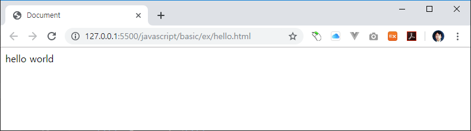

대부분의 프로그램의 언어를 학습을 할때 hello world를 출력합니다.
자바스크립트로 hello world를 출력하는 코드를 작성합니다.
hello world는 1972년 브라이언 커니핸(brian kemighan)이 벨 연수소에서 최초로 통신 메시지로 사용을 한것으로 알려져 있습니다.
모든 프로그램의 언어의 시작에서는 간단한 프로그램의 동작을 확인하기 위해서 hello world를 출력하는 프로그램을 먼저 사용을 합니다.
자바스크립트는 브라우저에서 해석되고 실행이 되는 인터프리어 언어 입니다. 자신의 컴퓨터에 브라우져만 설치되어 있으면 언제든지 자바스크립트 코드를 작성하고, 실행을 할 수 있습니다.
자바스크립트는 브라우저에서 해석 실행이 되기 때문에, html 문서와 많은 상관이 있습니다. 즉, 자바스크립트의 코드는 html 문서안에 작성을 합니다.
다음은 html의 기본 구조 입니다.
<!DOCTYPE html>
<html lang="ko">
<head>
<title>Document</title>
</head>
<body>
</body>
</html>
html 문서에 자바스크립트 코드를 작성하기 위해서는 <script>...</script>테그를 같이 작서을 해주어야 합니다.
브라우저로 화면을 출력할 수 있는 자바스크립트 코드를 추가해 보도록 합니다.
<!DOCTYPE html>
<html lang="ko">
<head>
<title>Document</title>
<script>
document.write("hello world");
</script>
</head>
<body>
</body>
</html>
브라우저로 확인을 합니다.

브라우저가 html문서를 읽고 해석할때, 자바스크립트 코드도 같이 해석하여 실행을 합니다.
document.write("hello world");
document.write()는 html의 body영역에 내용을 출력합니다.